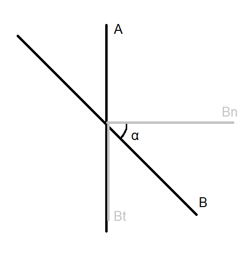
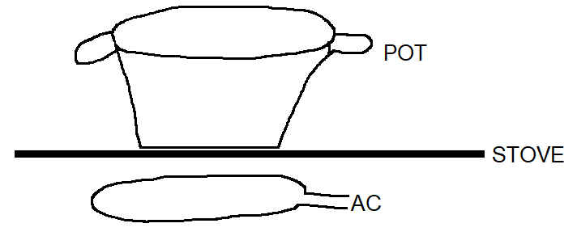
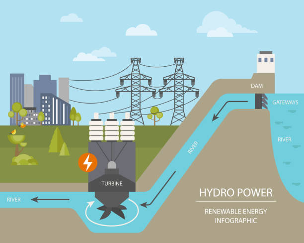

Magnetic flux is how much magnetic field strength travels through a surface.$$\Phi=BA$$
| Name | Unit | Symbol |
|---|---|---|
| Magnetic Flux (Φ) | Weber | Wb |
What if the magnetic field vector is not coming in perpendicular to the surface?
Here you can see that I have drawn Bn, the normal which is perpendicular to A, and also Bt. In normal cases, the angle alpha should be 0°. Our formula here would be Φ=Bn*A, but we want to use B! Luckily the cosine of α in the right triangle is equal to Bn/B, so we have a new formula:$$\Phi=BA⋅cos(\alpha)$$
A magnetic field can create electric current and voltage, but how? If we move a magnet towards a coil, the coil wants to oppose that (Newton's 3rd Law). To do this, it must push the magnet away. If you are approaching the coil with the North pole of the magnet, the coil will create a North pole of its own on that side to oppose the two North poles. However, when the coil creates this North pole, it also inducts a voltage and current!
Logically, a voltage is only inducted if there is a change in magnetic flux. We can also notice that the speed at which we approach the coil has an impact. The faster we do this motion, the bigger the generated voltage.$$U_{i}\approx \Delta\Phi$$$$U_{i}\approx \frac{1}{\Delta t}$$Since this is an opposing force, our constant of proportionality is -1.$$U_{i}=-\frac{\Delta\Phi}{\Delta t}$$We can also use Ohm's Law to find the formula for inducted current:$$I_{i}=-\frac{\Delta\Phi}{\Delta tR}$$Do note that there is only a current if the circuit is closed. If it is not closed, there is only an inducted voltage.
In a coil, we have to change the formula slightly to account for the amount of windings like so:$$I_{i}=N⋅-\frac{\Delta\Phi}{\Delta tR}$$
The first application of this is a magnetic induction stove.
Under the stove, there is a coil connected to AC (Alternating Current). The AC causes the direction of the current to alternate constantly, which causes the magnetic field around it to change direction as well. When this magnetic field goes through your pot (which is made of a special metal), there will be a changing magnetic flux due to the AC, causing a voltage. Since this is not a closed circuit, there will not be a current, but the voltage by itself causes the pot to heat up quickly. The useful part is that touching the stove yourself will not cause significant burns.
A second application is the turbine.
As you can see, there is a rod at the back you can rotate, causing the electric wire to spin around in the homogeneous magnetic field. Doing this causes a change in magnetic flux, resulting in voltage and a current, because this is a closed circuit. You can use this turbine to generate electricity!
Of course, there is no point to turning the thing manually - unless you're into slavery -, which is why it is used in these amazing inventions:
A wind turbine using the force of wind spinning its blades to generate electricity.
 From iStockA water turbine using the force of running water to spin blades, generating electricity in a hydro power plant near a dam.